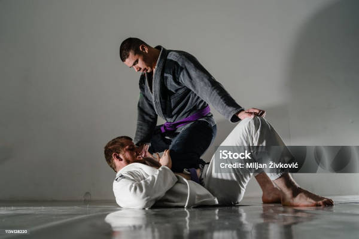

Pontuação
as pontuações no jiu-jitsu
O que vale dois pontos?
Queda

No jiu-jitsu, uma queda é uma técnica que consiste em derrubar o adversário ao chão, seja de costas ou de lado, desequilibrando-o. As quedas são um golpe básico, essencial para quem quer se destacar na luta e formar um lutador completo.
Joelho na barriga
O joelho na barriga é uma técnica do Jiu-Jitsu que consiste em colocar o joelho no abdômen do adversário para controlar a posição e aplicar pressão. É uma técnica versátil que pode ser usada em diversas situações, como na passagem de guarda.
Raspagem
A raspagem é uma técnica do jiu-jitsu em que o atleta de baixo inverte a posição com o adversário, ficando por cima dele.
O que vale três pontos?
Passagem de Guarda
A passagem de guarda é uma técnica do jiu-jitsu que ocorre quando o atleta que está por cima consegue ultrapassar as pernas do adversário que está por baixo e conquistar sua lateral.
O que vale quatro pontos?
Montada
A montada é uma técnica de jiu-jitsu em que o lutador fica em cima do adversário, com os joelhos e pés no chão, e as costas do oponente no tatame. É uma das técnicas mais utilizadas e todos os lutadores de jiu-jitsu devem saber executá-la.
Pegada nas Costas
A pegada pelas costas
Lembrando que esses pontos são validos apenas se a posição for estabilizada por 3segundos
Vantagens
Tudo bem, já sabemos as pontuações no jiu-jitsu, mas não podemos esquecer das vantagens, elas existem para que em caso de empate essa "pontuação extra" sirva como desempate, afinal, você já deve ter percebido que em lutas de pessoas mais experientes, normalmente, o que acaba por decidir o vencedor são as vantagens.
Mas o que são as vantagens?
No Jiu-Jitsu, uma vantagem é quando um atleta consegue chegar a uma posição que pode dar pontos, mas não consegue estabilizá-la por três segundos. Por exemplo, se um atleta "quase raspa", "quase monta" ou "quase passa a guarda", ele ganha uma vantagem. Também são consideradas vantagens as quase finalizações, como quando um atleta "quase" finaliza o adversário no arm-lock.
Punições
Não podemos esqueces das punições, por exemplo, caso você puxe o cabelo do seu oponente, as punições funcionam da seguinte maneira, na primeira punição você será repreendido, na segunda seu adversário ganhara 2 (dois) pontos e você será repreendido novamente, caso você receba uma quarta punição você será desclassificado.
O que acontece se a luta terminar empatada?
Caso a luta venha terminar com os competidores tendo os mesmos pontos e vantagens, ficara a critério do árbitro decidir o vencedor.
Caso você vá competir também é muito importante saber sobre as regras, veja sobre no cite da IBJJF.